MoxiWorks Realtime Stream V2
Welcome
Welcome to the MoxiCloud Realtime Stream documentation. MoxiWorks Platform Realtime Stream Updates give you instant updates of MoxiCloud data. Once you have set up your integration, you will receive updates instantly as they are made in the MoxiCloud, giving you the ability to better serve your customers.
In this section of the MoxiCloud Docs you’ll find documentation about integrating with the MoxiWorks Realtime Update (PubSub) notifications.
Getting Started
Why choose MoxiWorks Platform Realtime Stream updates?
The following are reasons you might want to utilize MoxiWorks Realtime Stream updates:
1) Instant Updates you get the data in your system as soon as a new listing/contact gets processed by our system. you have first access to new leads, new listings and new data because you’re not waiting for system synchronization – it’s always synchronized. This opens up a whole new range of product possibilities, giving you the ability to enhance your own product offerings and provide even better service to your clients.
2) Reduce Costs Instead of bogging down systems while synchronizing data for thousands of records at once, your updates are inherently distributed, ensuring that your systems are always responsive and ready to meet your primary business needs.
3) More Control By piping your SNS feed to SQS or to your own internal queueing mechanism allows you the ability to process incoming changes at whatever rate you want. You and your systems control how much data you import at any given time and ensure that rate never causes resource contention issues.
This documentation is intended to help you get you set up your MoxiWorks Platform Realtime Update Stream.
Getting Help
During your integration process with MoxiCloud Realtime Stream, your MoxiWorks Platform representative will work with you on getting your Realtime Stream Updates working. If you have any questions about getting set up, please email partners@moxiworks.com.
Setting Up For Updates
Setup Using An AWS SNS Topic
The MoxiWorks Platform Realtime Stream currently offers updates using Amazon’s Simple Notification Service (SNS). If you are interested in receiving MoxiWorks Realtime Stream Updates using a different method, please email partners@moxiworks.com.
SNS: Configuring For MoxiWorks Platform Realtime Stream Updates
In this section getting your Realtime Stream set up using SNS is covered. Use this to get your incoming MoxiWorks Realtime Stream Updates started. Once you’ve set up your SNS feed to receive updates from the MoxiWorks Realtime Stream you can then configure handling of those messages to best serve your needs. You might configure MoxiWorks Realtime Stream Updates to be sent to your servers or to go to an SQS queue – ensuring you never miss an update. Combining MoxiWorks Realtime Stream Updates with Amazon SNS gives you the flexibility to handle incoming data any way that you need.
Creating an SNS Topic for Realtime Stream Updates
Overview
To receive MoxiWorks Platform Realtime Stream Updates via SNS, first you’ll need to create an SNS topic in your AWS Console and give permissions to MoxiWorks to publish to that SNS topic. This section goes over setting up your SNS Topic. Later, we’ll go into getting data from your SNS Topic to your server.
SNS Topic Region: us-west-2
Production MoxiWorks AWS User: arn:aws:iam::689201434595:root
QA/Staging MoxiWorks AWS User: arn:aws:iam::063254003524:root
Quickstart
If you’re familiar with setting up an SNS topic and giving permissions to a specific user for publishing to that topic, all you’ll need to do is:
1) Give publishing permissions for your topic to the MoxiWorks Platform Stream User in AWS. The platform stream user ID is shown to the right for QA and production environments.
2) Set up a subscription to receive incoming messages from that topic (HTTPS endpoint, SQS, etc.)
3) Please email partners@moxiworks.com and let us know what the SNS topic ARN is and whether the topic is for QA or production updates.
SNS Configuration Procedure
If you need a little more help getting the SNS topic and subscription set up, we’ve created an instructional procedure that you can follow.
To set up MoxiWorks Platform Realtime Stream SNS Topic using the AWS SNS Console use the following procedure.
1) From your web browser, go to the Amazon SNS console at console.aws.amazon.com, to open the Amazon SNS Topics dashboard.
2) On the Amazon SNS Topics dashboard, click the Create topic button.
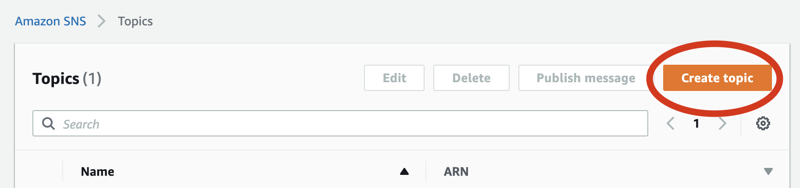
3) From the Details section of the Create topic interface, set the name of the topic. We recommend you utilize something that makes it clear that this is your MoxiWorks Platform Realtime Stream.
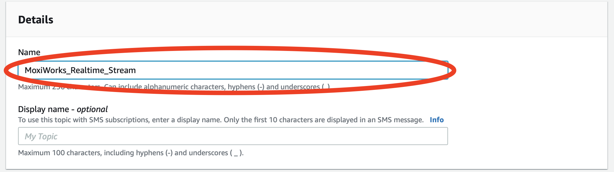
4) Click on the disclosure triangle to open the Access Policy section of the Create topic interface.
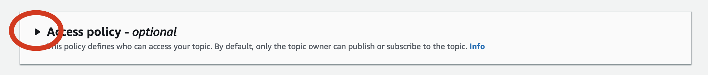
5) Ensure Basic method is selected.
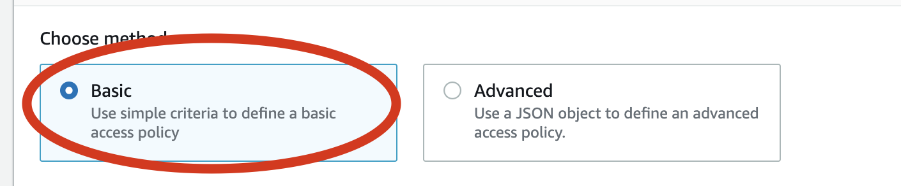
6) Under the Define who can publish messages to the topic section, click the Only the specified AWS accounts radio button.
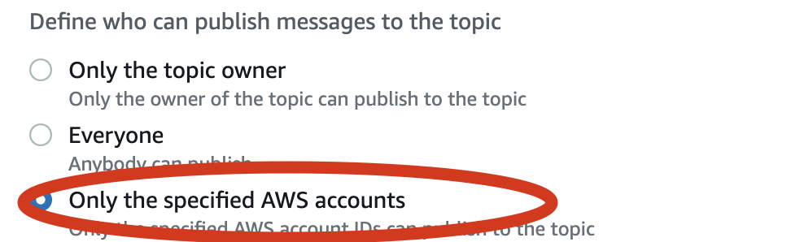
MoxiWorks Platform Realtime Stream AWS Account ID (Production): 689201434595
MoxiWorks Platform Realtime Stream AWS Account ID (QA/Staging): 063254003524
7) In the text area that appears, paste the MoxiWorks Platform Realtime Stream AWS Account ID: 689201434595 (production) or 063254003524 (qa and staging)
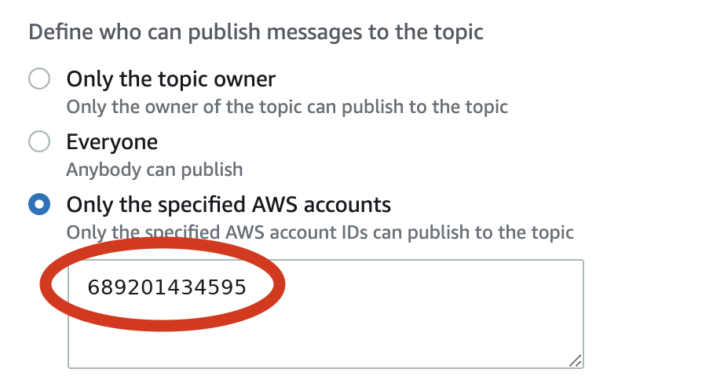
8) Click the Create topic button to set up the topic.
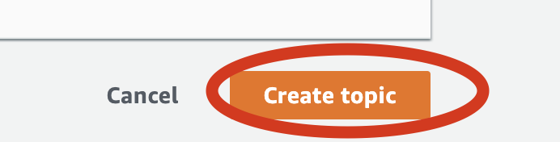
13) Click the Save changes button
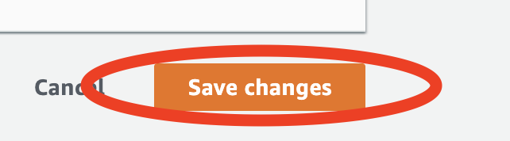
9) Let your MoxiWorks Platform Partner Services Representative know what the SNS topic ARN is and whether it is for QA or production updates.
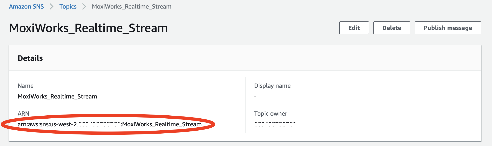
Once you’ve completed this procedure, your Topic should now be ready to receive MoxiWorks Platform Realtime Stream Updates.
SNS: Receiving Updates
In this section, we’ll look at getting MoxiWorks Platform Realitime Stream Updates to your server; however, this is only one way that you might get data from SNS to your systems. You can investigate all the ways that you can integrate an SNS feed into your systems architecture via AWS help.
Configuring an SNS Topic To Send Updates To An Endpoint via HTTP or HTTPS
Overview
To receive MoxiWorks Platform Realtime Stream Updates from SNS, you’ll need to configure your SNS topic in your AWS Console to forward requests to your server. This section goes over setting up your SNS Topic to pass messages directly to your SNS enabled endpoint.
Quickstart
If you’re familiar with setting up SNS endpoints for data consumption, then all you’ll need to do is: 1) Set up your SNS endpoint on your server.
2) Configure your SNS Topic to point to your server.
SNS Configuration Procedure
If you need help in configuring your SNS Topic to deliver messages to your SNS enabled endpoint, we’ve created this instructional procedure to help you.
To set up your endpoint to receive MoxiWorks Platform Realtime Stream Updates via your SNS Topic, use the following procedure.
1) From your web browser, go to the Amazon SNS console at console.aws.amazon.com, to open the Amazon SNS Topics dashboard.
2) On the Amazon SNS Topics dashboard, click the SNS topic that is set up to receive messages.
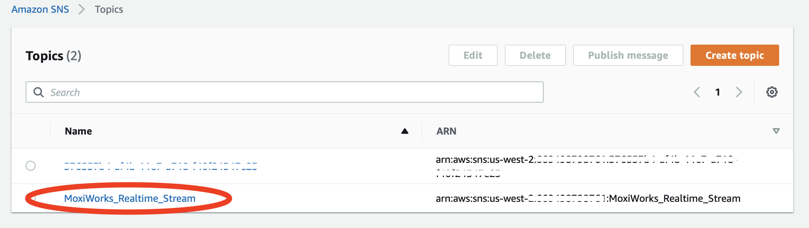
3) From the SNS Topic’s details page, click the Create subscription button.
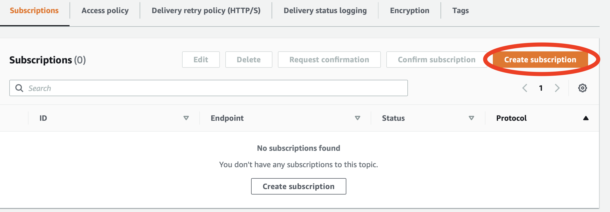
This will open the Create subscription interface.
4) From the Details section, click the Protocol dropdown menu.
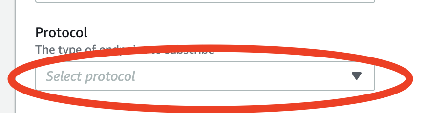
5) Select the appropriate protocol for your incoming SNS messages.
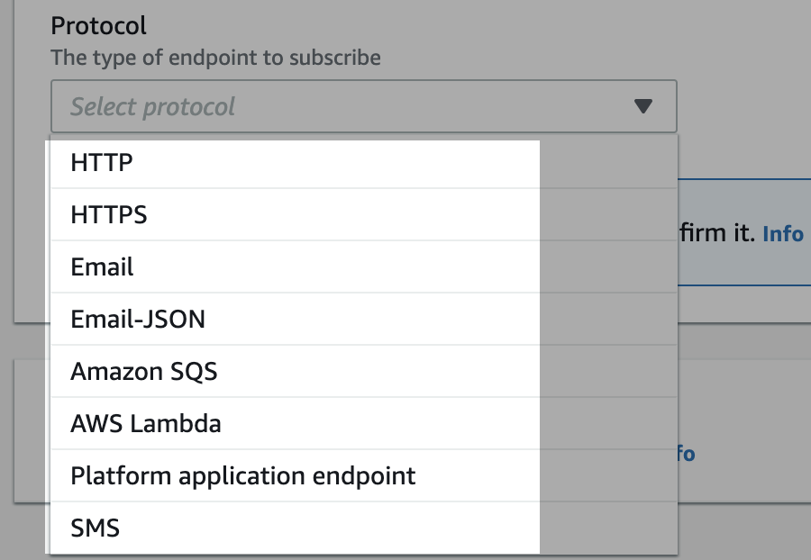
6) If using HTTP or HTTPS as your protocol, set the URL of the endpoint which you expect to receive messages.
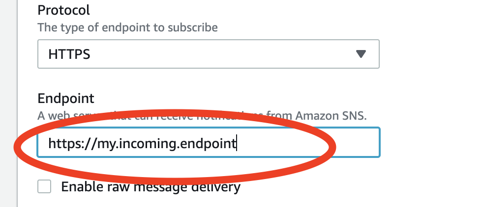
7) Click the Create subscription button to create the subscription.
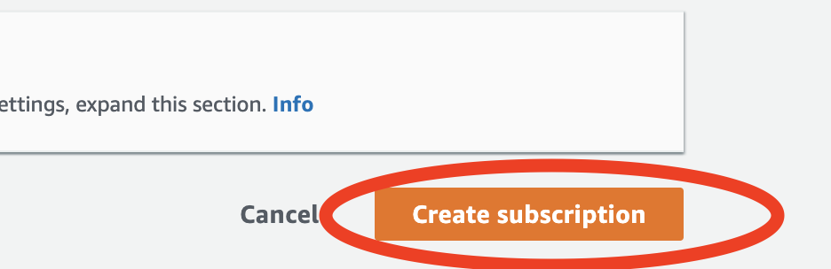
Update Handling
The MoxiWorks Platform Realtime Stream is designed to allow you to use the same parsing logic for both Realtime Stream Updates as well as MoxiCloud API calls.
Except where noted below, data pushed via Realtime Updates should have have almost exactly shape as objects pulled via MoxiCloud API. Exceptions are noted in the Data Shape
sections below.
Payload Metadata
Each message sent to your system by the MoxiWorks Platform Realtime Stream will have metadata associated with the object payload in the root level of the payload. In this section we’ll take a look at the metadata provided in the root level of the response.
Realtime Stream Update Payload Metadata Example
{
"type":"/[agent|contact|listing|office|etc...]/",
"action":"/[create|update|upsert|delete]/",
"data":{
...
},
"last_updated": 1650050768,
"modification_timestamp":"2022-04-15T19:26:08.000+00:00",
"company_uuid": 1234567,
"agent_uuid": "140a7944-bf51-4380-b61d-7ddd51b645f5",
"primary_id": "bfa7d824-f1da-475c-aeac-14270f471d45"
}
Realtime Stream Update Payload Metadata
As previously noted, the payload of the data sent will (as close as possible) match the MoxiCloud API object shape. For example, each Agent object will match the shape of the Agent that is provided via the MoxiCloud; however, the payload itself is wrapped in an outer scope that provides metadata about the update that would normally be implicitly scoped in a request to the MoxiCloud API. In orderto ensure that incoming updates are routed to the correct parsing logic, you’ll need to inspect the metadata in the payload to determine the kind of update being sent and then route it to the correct logic for parsing and processing.
| Attribute | Type | Notes |
|---|---|---|
| last_updated | Integer | Unix timestamp in full seconds of when data was updated, check that this payload is more recent than your copy before consuming |
| modification_timestamp | Integer | ISO8601 formatted timestamp of when data was updated, check that this payload is more recent than your copy before consuming |
| type | String | Enumerated set includes agent, contact, listing, office |
| action | String | Enumerated set includes create, update, upsert, delete |
| data | Object | Update Payload |
| primary_id | String | Primary identifier for object |
| agent_uuid | String | Optional |
| company_uuid | Integer | Optional |
last_updated This is the Unix timestamp representing the date/time that this Realtime Stream Update was updated. You should utilize the timestamp to ensure that no out-of-order updates occur.
modification_timestamp This is the ISO8601 timestamp representing the date/time that this Realtime Stream Update was updated. You can utilize the timestamp to ensure that no out-of-order updates occur.
type The type of entity update is in the payload of the message. this will be one of agent, contact, listing or office.
action The action associated with the update. this will be one of create, update, upsert or delete.
data A JSON object representing the entity in the MoxiCloud.
primary_id The primary identifier for the object. This can be used in subsequent calls to fetch the payload from the MoxiCloudAPI.
agent_uuid Optional reference to an agent, provided only when entity is scoped to an agent.
company_uuid Optional reference to a company, provided only when entity is scoped to a company
Update Types
The MoxiWorks Platform Realtime Stream currently provides updates for the following endpoints:
Agent (Payload documentation)
Contact (Payload documentation)
Listing (Payload documentation)
* Listing data will be sent in snake_case instead of UpperCamelCase (the default for listings in MoxiCloudAPI)
Office (Payload documentation)
Please check back soon for additional supported endpoints.